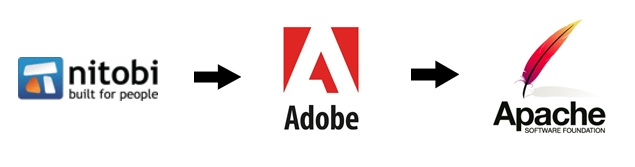
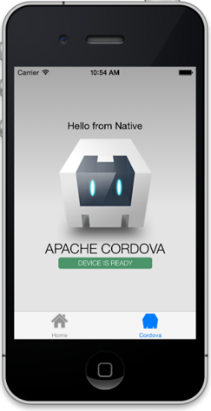
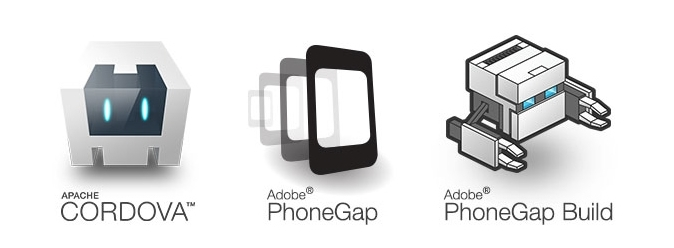

Sobre
Originalmente o Apache Cordova se chamava Phonegap quando foi desenvolvido pela empresa Nitobi, após a Adobe comprar a Nitobi, ela doou o código fonte para a Apache Foundation e a Apache nomeou o projeto de Apache Cordova, a Adobe usa essa base para prover um Cordova incrementado, ou seja, o phonegap pode ser considerado uma distribuição do Cordova, no geral os dois servem ao mesmo propósito, que é de um modo transparente para o desenvolvedor criar uma app nativa capaz de abrir uma webview para a execução do html, css e javascript.
E o que é webview? Para quem não sabe, webview é um tipo especial de browser que começa a rodar assim que a app híbrida é aberta pelo usuário. É dentro desse browser que a app é executada. É claro que o usuário não sabe que está dentro de um browser pois essa webview não contém componentes característicos de um, como a barra de endereço e barra de favoritos, por exemplo. A webview contém apenas o necessário para que o html, css e javascript funcione.
Paralelo a isso, eles também tem o conceito de plugins que são usados para acessar os recursos do dispositivo e através de plugins e da API Phonegap/Cordova, você possui acesso a praticamente tudo de qualquer plataforma e dispositivos. Ou seja, se quiser, você pode ter acesso ao status da bateria, pode controlar a câmera, pode saber se o usuário está conectado à internet e inclusive se é uma rede wi-fi ou 3G/4G, ter acesso aos arquivos locais, ter acesso à agenda de contatos, etc.
Obviamente que nem tudo é tão fácil, mas para a maioria dos recursos já existem plugins, então se você precisa que sua aplicação controle a função de vibrar do dispositivo? Sem problemas, basta utilizar a API nativa do Cordova. Precisa que seu usuário possa compartilhar alguma informação via SMS? Sem problemas, existem plugins específicos de compartilhamento, que permitem inclusive compartilhar com Twitter e Facebook. Em resumo, o que ambas as ferramentas fazem é “traduzir” seu código javascript para a linguagem nativa da plataforma, seja Android, IOS, Windows Phone, etc.
O grande problema, é que em uma mobile app é necessário não só construir componentes como menus, tabs e formulários responsivos, mas também é necessário garantir a performance e o bom comportamento desses componentes diversos em sistemas, dispositivos e tamanhos de tela diferentes.
A complexidade na construção desses componentes se tornou um sério problema. Tempo e dinheiro que deveriam estar centralizados nas funcionalidades do modelo de negócios estavam indo parar na construção dos componentes mais básicos da app. Para resolver esse problema, surgiu um projeto chamado ionic, que vai ser falado mais a frente. Mas acredito que o grande “X” da questão no momento, seja qual ferramenta escolher e qual é a diferença entre elas, certo?
Na própria documentação do Command Line do Phonegap, você pode perceber que são utilizados recursos do Apache Cordova. Isso acontece porque o Phonegap é baseado no Cordova, é como uma “extensão”, como foi dito anteriormente. A vantagem de utilizar o Phonegap, é utilizar o Phonegap Build online. Com esta ferramenta online, que também pode ser acessada via linha de comando, você consegue compilar, assinar e publicar quase que instantaneamente em diversas plataformas e diversas app stores.
Já com o Apache Cordova, você precisar fazer tudo localmente, ou seja, você precisa ter um emulador da plataforma desejada, ter todas as SDKs necessárias para a plataforma e todas as demais configurações de ambiente. Precisará também compilar, assinar e publicar tudo manualmente. Mas em termos de código, não muda nada de um para o outro, inclusive as documentações servem para ambos, os mesmos plugins, etc. Com isso, concluímos que o Phonegap é uma “colher de chá”, apenas um facilitador do Cordova.